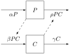

We are interested in studying what happens in an interacting system. For these systems, our system must have more than one dynamic variable. We call the system a dynamical system. In this section, we introduce some terminology for how we think about dynamical systems. We will be able to visualize these concepts graphically when there are two or three dynamic variables. When there are more than three variables, we will work by analogy even though we aren’t able to visualize the result.
Subsection5.3.1Vector Fields
A continuous dynamical system is defined in terms of a system of differential equations. Each state variable has a rate of change (the derivative). In a dynamical system, there exists a function of the state variables and the independent variable \(t\) that equals this rate of change at all times. In an abstract system with \(n\) state variables, labeled \(x_1(t), x_2(t), \ldots, x_n(t)\text{,}\) where the time dependence is explicitly stated, there are \(n\) functions of the state variables \(f_1, f_2, \ldots, f_n\) such that
The collection of functions \((f_1, f_2, \ldots, f_n)\) defines a vector field.
Theorem5.3.1.Existence and Uniqueness of Initial Value Problem.
If each of the component rate functions are continuous and all of the partial derivatives are continuous in a neighborhood of the initial value \((t_0, x_{1,0}, x_{2,0}, \ldots, x_{n,0})\text{,}\) then the initial value problem defined by the vector field \((f_1, f_2, \ldots, f_n)\) and initial values \(x_k(t_0) = x_{k,0}\) for \(k=1, 2, \ldots, n\) has a unique solution for some interval \(t \in (t_0-\delta, t_0+\delta)\text{.}\)
The existence and uniqueness theorem guarantees that if we specify the state of the system at a time in which the vector field changes smoothly relative to time and also relative to the values of the state variables (this is what continuity of the partial derivatives guarantees), then the state will follow a flow defined by the vector field. In many cases, the vector field does not depend on time and we have an autonomous system of differential equations. In these cases, we can often visualize solutions to the differential equations by create a plot of the vector field.
A vector is a mathematical object that consists of both a direction and a magnitude. Graphically, we usually represent a vector as an arrow. The length of the arrow represents its magnitude and the direction is the direction of the arrow from its root (the straight segment) to its tip (the arrow). A vector can also be determined from its components.
Standard components correspond to perpendicular directions, with one direction for each state variable. A system with two state variables has a vector field defined in the plane with two directions. The direction of the \(x\)-axis corresponds to the first state variable and the \(y\)-axis corresponds to the second state variable. A vector is specified by giving a value for each coordinate direction, say \(\vec{v} = \langle a, b \rangle\) (similar to a point). The vector, drawn at a location \((x,y)\) in the plane corresponds to an arrow with a root at \((x,y)\) and the tip at \((x+a,y+b)\text{.}\) That is, the vector gives a displacement from the root to the tip.
The vector field functions \((f_1, \ldots, f_n)\) define at every moment \(t\) and state \(x = (x_1, \ldots, x_n)\) a rate vector
A solution can be visualized as a point \(x(t)\) moving through the state space such that its velocity is at each instant defined by \(\vec{u}(t,x)\text{.}\) For an autonomous system, the velocity depends only on the current state and we call the state space the phase space. When the vector field depends explicitly on time, we must add the time variable as a new state variable and the phase space is one dimension larger than the state space.
We illustrate the ideas with some two-dimensional examples and use Sage to generate illustrative figures.
Example5.3.2.
An example from physics is the harmonic oscillator (mass on a spring). In the absence of friction, the only force is from the spring, proportional to and opposing the displacement. The state variables are the displacement \(x\) and the velocity \(v\text{.}\) The system of differential equations is given by
The rate for \(x\) is just the definition of velocity. The rate for \(v\) is acceleration and is a consequence of Newton’s law \(F=ma\) where \(F=-kx\) is the force of the spring.
The vector field is identified by considering an order for our state variables, \(x_1 = x\) and \(x_2 = v\text{,}\) with corresponding rate functions \(f_1(x,v) = v\) and \(f_2(x,v)=- \frac{k}{m} x\text{.}\) The phase plane is the \((x,v)\)-plane. The vector field corresponds to placing at each point \((x,v)\) a vector \(\langle v, -\frac{k}{m} x\rangle\text{.}\) Computer generated plots of vector fields usually rescale the vectors but preserve the correct directions and relative lengths.
The following Sage script generates a vector field for this system.
When you execute the Sage script and see the results, you should observe arrows that look like they generate a circular pattern (an ellipse, actually). The closer to the origin, \((0,0)\text{,}\) the smaller the arrows appear.
The vector field allows us to tell the story of what happens to the oscillator. Imagine stretching the string for a positive displacement by 1 unit of distance. Right when we let go, we are at a state of \(x=1\) and \(v=0\text{,}\) which appears on the \(x\)-axis of the phase space. The vector field points down, \(\langle f_1, f_2\rangle = \langle 0, -\frac{k}{m} \rangle\text{,}\) which means that we start to gain a little negative velocity. Immediately, the negative velocity starts to cause the displacement to decrease. This corresponds to following the ellipse in the fourth quadrant.
Eventually, the state of the system reaches \(x=0\) with some maximum negative velocity \(-v_{\mathrm{max}}\text{.}\) This corresponds to a point on the lower \(v\)-axis. The vector field is horizontal and directed left, \(\langle f_1,f_2 \rangle = \langle -v_{\mathrm{max}}, 0 \rangle\text{.}\) The velocity causes the displacement to become negative and immediately, the acceleration begins to be positive and the velocity gradually slows down to zero, at which time we have returned to the \(x\)-axis on the left side. It is not yet obvious, but conservation of energy guarantees that we have reached a negative displacement exactly equal to our original positive displacement. The state of the system continues through the second and first quadrant, ultimately returning to its initial point, whereon the cycle is repeated.
The path the state follows through phase space is called the orbit. If we include the time variable to extend the phase space, the path is called the trajectory. If we solve the initial value problem numerically, we can add an orbit to the plot of the vector field. In addition, we often wish to see the graphs of the individual state variables as functions of time. This is accomplished by plotting \((t,x)\) and \((t,v)\text{.}\)
Example5.3.3.
In the early 1900s, two scientists, Alfred Lotka and Vito Volterra, independently developed a system of differential equations to describe the dynamics of two populations—a producer or prey and a consumer or predator. The system of equations, now called the Lotka–Volterra predator–prey model, has two state variables. Let \(C\) represent the size of the consumer (or carnivore) population and let \(P\) represent the size of the producer (or prey) population. The basic model assumes that the producer would grow in direct proportion to its current population and that the consumer would die in direct proportion to its population. Each consumer kills and eats the producer at a rate proportional to the producer population, and births of the consumer are proportional to the consumption rate. The flow diagram for the model is shown below.

Figure5.3.4.
The resulting system of differential equations defines our vector field.
\begin{align*}
\frac{dP}{dt} &= \alpha P - \rho P C, \\
\frac{dC}{dt} &= \beta P C - \gamma C.
\end{align*}
The following Sage script generates a vector field and plots a sample orbit in the phase plane. A graph of the corresponding state variables as functions of time is also generated.
Subsection5.3.2Nullclines and Equilibria
A nullcline is a subset of the phase space of points where one of the rate functions in the vector field equals zero. In a two-dimensional system, a nullcline is typically a curve. In a three-dimensional system, a nullcline is typically a surface. In higher dimensions, a nullcline defines what is called a hypersurface, which is the generalization of a surface in three dimensions. Nullclines divide the phase space into disjoint regions in which the state variable is exclusively either increasing or decreasing.
An equilibrium is a point in phase space such that all of the state variables are constant. This requires that the point is on every variable’s nullcline. So we can find equilibrium points by finding where the nullclines intersect.
We can create a graph that shows the nullclines using something called an implicit plot. The way that an implicit plot works is that a formula is computed at every point on a grid in the plane. We could think of these values as defining the height of a surface above or below each point in the plane. The implicit plot uses this surface to draw a contour in the plane where the height equals zero. Because the surface is not known exactly but is only measured at a grid of points, the contour is only approximate.
Example5.3.5.
The Lotka–Volterra predator–prey model given by
\begin{align*}
\frac{dP}{dt} &= \alpha P - \rho P C, \\
\frac{dC}{dt} &= \beta P C - \gamma C,
\end{align*}
is a two-dimensional system. The \(P\)-nullcline \(\mathcal{N}_P\) is the set of all points in the phase plane where \(\frac{dP}{dt} = 0\text{,}\)
\begin{equation*}
\mathcal{N}_P = \{ (P,C) : \alpha P - \rho P C = 0 \}.
\end{equation*}
Similarly, the \(C\)-nullcline is the set of all points where \(\frac{dC}{dt} = 0\text{,}\)
\begin{equation*}
\mathcal{N}_C = \{ (P,C) : \beta P C - \gamma C = 0 \}.
\end{equation*}
To illustrate where an implicit plot comes from, the following Sage script plots the surface defined by the \(P\)-rate formula with a contour showing the curve where the rate is zero. This approximate contour is the graphed as an implicit plot.
The \(P\)-nullcline divides the phase plane into regions of \(P\)-directionality. The intersection points are equilibria, which for the given model parameters occur at \((P,C)=(0,0)\) and \((P,C)=(400,50)\text{.}\) Within each region, the state variable either exclusively increases (\(\frac{dP}{dt} \gt 0\)) or exclusively decreases (\(\frac{dP}{dt} \lt 0\)). We can add arrows to visualize the result. The values used to define the ends of arrows was determined manually after looking at the phase plane with the nullcline shown to make the arrow centered.
Ultimately, we want to know the direction for both \(P\) and \(C\text{.}\) We plot the nullclines together, using different colors to distinguish them. We test the sign of the rate functions at points in the regions and draw arrows showing the direction. Conveniently, we could have Sage do the work once we identify the points by automating the drawing of arrows. The following script generates the nullclines, after some experimentation to get the legend looking appropriate.
Looking at the phase plane, we see nine distinct regions separated by the nullclines. The Sage script below tests the sign of the vector field rates at nine points, one from each region and draws horizontal and vertical arrows rooted at that point.
Higher dimensions obey the same ideas in principle but are harder to visualize. Even three dimensions can be a little challenging to interpret.
Example5.3.6.
The SIR model for infectious diseases considers a single population where each individual can be categorized as susceptible to the disease, infected, and recovered and immune from the disease. The state variables \(S\text{,}\)\(I\text{,}\) and \(R\) count the number of individuals in each category. Assuming that only healthy individuals give birth subject to a carrying capacity and infected individuals die at a higher rate than other individuals, a simple model is given by the system of differential equations
\begin{align*}
\frac{dS}{dt} &= r(S+R)(1 - \frac{S+I+R}{K}) - \alpha S I - \gamma S \\
\frac{dI}{dt} &= \alpha S I - (\gamma + \delta) I - \rho I \\
\frac{dR}{dt} &= \rho I - \gamma R
\end{align*}
The phase space is three-dimensional.
The Sage script below uses three-dimensional implicit plots to create approximate nullclines (these will be surfaces) for the three state variables. It is hard to see the intersection of all three surfaces. The script includes a step to solve for the equilibrium points.